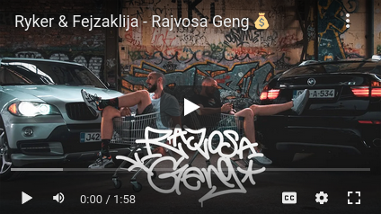

OUT NOW
Imamo sve što ti treba
Audio Produkcija
Udji u gluhu sobu, skoči na mic bez ikakve peglaze
Video Produkcija
Ako več imaš svoj beat donesi ga, a ako nemaš- nema problema
Mixanje
Dobar miks moze pitu od govana u zlato pretvorit
Audio Produkcija
Udji u gluhu sobu, skoči na mic bez ikakve peglaze
Video Produkcija
Ako več imaš svoj beat donesi ga, a ako nemaš- nema problema
Mixanje
Dobar miks moze pitu od govana u zlato pretvorit
Ako želiš podržati našu ideju pridruži se udruženju